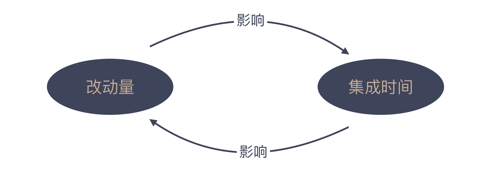

05 | 持续集成：集成本身就是写代码的一个环节
上一讲我们探讨了需求的“完成”，你现在知道如何去界定一个需求是否算做完了，这要看它是不是能够满足验收标准，如果没有验收标准，就要先制定验收标准。这一点，对于每一个程序员来说都至关重要。
在今天这一讲中，我们假设需求的验收标准已经制定清楚，接下来作为一个优秀的程序员，你就要撸起袖子准备开始写代码了。
不过在这里，我要问你一个问题：“是不是写完代码，工作就算完成了呢？”你或许会疑惑，难道不是这样吗？那我再问你：“代码是技术团队的交付物吗？”
你是不是发现什么不对劲了。没有人需要这堆文本，人们真正需要的是一个可运行的软件。写代码是程序员的职责，但我们更有义务交付一个可运行的软件。
交付一个可运行的软件，通常不是靠程序员个体奋战就能完成的，它是开发团队协作的结果。我们大多数人都工作在一个团队中，那我们写的代码是不是能够自然而然地就和其他人的代码配合到一起呢？显然没那么简单。
如果想将每个程序员编写的代码很好地组合在一起，我们就必须做一件事：集成。
但是集成这件事情，该谁做，该怎么做呢？我不知道你有没有思考过这个问题。在开始这个话题之前，我先给你讲个故事。
集成之“灾”
2009年，我在一个大公司做咨询。对接合作的部门里有很多个小组，正在共同研发一个项目。他们工作流程是，先开发一个月，等到开发阶段告一段落，大项目经理再把各个小组最精锐成员调到一起开始集成。对他们来说，集成是一件大事，难度很大，所以要聚集精英来做。
这个项目是用 C 语言编写的，所以，集成的第一步就是编译链接。大家把各个小组写好的程序模块编译到一起，哪个模块有问题，哪个小组的精英就出手解决它。
如果第一天，所有模块能够编译链接到一起，大家就要谢天谢地了。之后才进入到一个正式“联调”的过程。
“联调”的目标，是把一个最基本的流程跑通，这样，集成才算完成。而对他们这个项目来说，“联调”阶段更像是场“灾难”。
为什么？你想想，一个大部门有若干个团队，每个团队都在为同一个项目进行代码开发，周期为一个月。这一个月期间，所有团队的程序模块汇总在一起，体量会非常庞大。那么这些内容中，出现错误需要改动的可能性也就非常大，需要改动的量也就非常大。因此他们集成“联调”所需要的时间也会非常长。
即便他们调动各组精英，完成一次项目集成的时间至少也需要2～3天，改动量稍大，可能就要一周了。虽然我不知道你所处公司的现状是什么样的，但大概率地说，你在职业生涯中，会遇到过类似的场景。那怎么去解决这个问题呢？
迈向持续集成
聪明的你作为旁观者一定会想，在这个故事里，为什么他们要在开发一个月后才做集成呢？为什么不能在开发一周后，甚至是更短的时间内就集成一次？
这是一个行业中常见的痛点，所以，就会有人不断地尝试改进，最先取得的突破是“每日构建”。
1996年，Steve McConnel出版了一本著作《Rapid Development》，国内译作《快速软件开发》。在这本书中，作者首次提出了解决集成问题的优秀实践：Daily Build，每日构建。通过这个名字，我们便不难看出它的集成策略，即每天集成一次。
这在当时的人看来，已经是“惊为天人”了。就像上面提到的例子一样，当时的人普遍存在一种错误认知：集成不是一件容易的事，需要精英参与，需要很长时间，如果每天都进行集成，这是想都不敢想的事情。
实际上，每日构建背后的逻辑很简单：既然一段时间累积下来的改动量太过巨大，那一天的时间，累积的改动量就小多了，集成的难度也会随之降低。
你会看到，对比最后做集成和每日构建，这两种不同的做法都是在处理改动量和集成时间的关系。只不过，一个是朝着“长”的方向在努力，一个则瞄准“短”的方向。最后的事实证明，“长”的成了恶性循环，“短”的成了最佳实践。

既然，我们认同了只要增加集成的频率，就可以保证在每次集成时有较少的改动量，从而降低集成难度。
那问题来了？究竟要在开发后多久才进行一次集成呢？是半天、两个小时、还是一个小时呢？倘若这个想法推演到极致，是否就变成了只要有代码提交，就去做集成？
没错，正是基于这样的想法，有人尝试着让开发和集成同时进行，诞生了一个关于集成的全新实践：持续集成。
持续集成一个关键的思维破局是，将原来分成两个阶段的开发与集成合二为一了，也就是一边开发一边集成。
持续集成这个想法固然好，但是不是需要有专人负责盯着大家的工作，只要有人提交了代码，这个负责人就要去集成呢？显然，这在真实工作中是行不通的。
既然是程序员的想法，程序员解决问题的方案自然就是自动化这个过程。于是，有人编写了一个脚本，定期去源码服务器上拉代码，出现程序更新时，就自动完成构建。
后来，人们发现这段脚本与任何具体项目都是无关的。于是，把它进一步整理并发布出来，逐步迭代发展成为今天广为人知的持续集成服务器。
在2000年时，“软件行业最会总结的人” Martin Fowler 发布了一篇重量级文章“Continuous Integration”。
之后一年，由 Martin Fowler 所在的 ThoughtWorks 公司发布了市面上第一款持续集成服务器 CruiseControl。CruiseControl 可谓是持续集成服务器的鼻祖，后来市面上的服务器基本都是在它的基础上改良而来的。
Martin Fowler 的重磅文章和首款持续集成服务器的问世，让软件行业对持续集成进行了更为深入的探讨，人们对于持续集成的认知程度一路走高，持续集成服务器成为了开发团队在集成阶段最得心应手的工具。围绕着持续集成的一系列行为准则逐渐成型。
以至于发展到2006年，Martin Fowler 不得不重写了“Continuous Integration”这篇文章。之后人们更是以持续集成为基础，进一步拓展出持续交付的概念。
人类对工具是有偏爱的，持续集成服务器的发布，将持续集成从一项小众实践逐步发展成为今天行业的“事实”标准。
“地面上”的持续集成
然而，即便持续集成已经发展多年，至今整个行业在对它的应用上，却并未达到同步的状态。有趣的是，有一部分公司虽然还无法实现持续集成，但是因为持续集成服务器的出现，反而可以做到每日构建。
这不难理解，每日构建的概念虽然早早就提出来了，但在那个时期，行业里真正践行每日构建的公司并不多，其根本原因就在于，每日构建最初都是一些指导原则，缺乏工具的支持。而每日构建和持续集成最根本的区别在于构建时机，而这只是持续集成服务器的一个配置选项而已。
当然，行业内有一部分公司已经可以将持续集成运用得得心应手，而也有相当大的一部分人还在为集成而痛苦不堪，比如我前面提到的咨询项目。
这个项目是我在2009年时参与的。也就是说，此时距离 Martin Fowler 最初写下“Continuous Integration”已经过去了9年，甚至距离这篇文章的更新版发布也已经过去了3年，更不要说距离 McConnell 提出“每日构建”已经13年。
即便以当时的时间坐标系来看，这个项目的集成实践水平至少落后行业10年以上。没错，他们甚至连每日构建都还差很远。
时至今日，持续集成早就是成熟得不能再成熟的实践了。然而，据我所知，许多公司依然处于集成要依赖于“英雄”的蛮荒阶段。
虽然我们在同一个时代写代码做开发，但在技术实践层面，不同的团队却仿佛生活在不同的年代。这也是我们要学习的原因。
也许，目前国内对于持续集成的实践水平还处于较为原始的状态，这是个坏消息。但好消息是，我们可以通过更多的学习，对集成有足够的了解，从而一步到位地进入到最先进的状态中。
无需停留在以精英为核心的集成时代，也可以完全不理会每日构建，我希望你拥有这个时代的集成观，直接开始持续集成。
如果有了持续集成的集成观，我们该怎么看待开发这件事呢？开发和集成就不再是两个独立的过程，而是合二为一成为一体。
基于这样的理解，我们就不能再说代码写完了，就差集成了，因为这不叫开发的完成。一个好的做法是尽早把代码和已有代码集成到一起，而不应该等着所有代码都开发完了，再去做提交。
怎样尽早呢？你需要懂得任务分解，这是我们在之后的“任务分解”主题下会讲到的内容。
总结时刻
在软件开发中，编写代码是很重要的一环，但程序员的交付物并不应该是代码，而是一个可工作的软件。当我们在一个团队中工作的时候，把不同人的代码放在一起，使之成为一个可工作软件的过程就是集成。
在很长一段时间内，集成都是软件行业的难题，改动量和集成时间互相影响。幸运的是，不同的人在不同的方向尝试着改变，结果，同时加大改动量和集成时间的人陷入了泥潭，而调小这两个参数的人看到了曙光。
每日构建作为早期的一种“最佳实践”被提了出来，但因为它基本上都是原则，没有得到广泛的应用。当人们进一步“调小”参数后，诞生了一个更极致的实践：持续集成，也就是每次提交代码都进行集成。
真正让持续集成成为行业最佳实践的是，Martin Fowler 的文章以及持续集成服务器。持续集成的思维让我们认识到，开发和集成可以合二为一。我们应该把开发的完成定义为代码已经集成起来，而站在个体的角度，我们应该尽早提交自己的代码，早点开始集成。
如果今天的内容你只能记住一件事，那请记住：尽早提交代码去集成。
最后，我想请你分享一下，在实际工作中，你遇到过哪些由集成带来的困扰？欢迎在留言区写下你的想法。
感谢阅读，如果你觉得这篇文章对你有帮助的话，也欢迎把它分享给你的朋友。